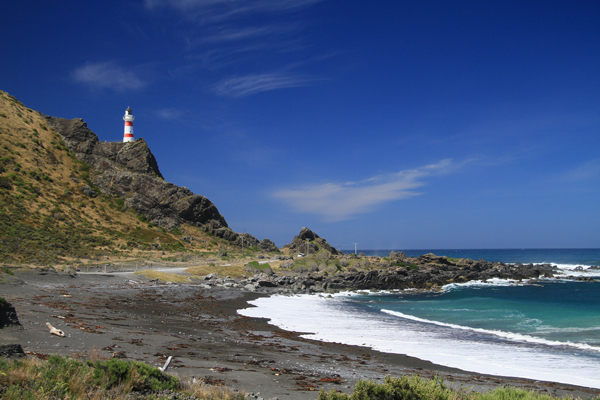

Wellingtons Cable Car!
Wellington Tourist Location
Wellington's Rugged Coastal Landmark!
Cape Palliser is a spectacular coastal destination located at the
southernmost point of the North Island, approximately two hours from
Wellington. The area is known for its dramatic coastline, rocky
beaches, steep cliffs, and beautiful views across the Cook Strait.
One of the most recognisable attractions at Cape Palliser is its
historic lighthouse, which sits at the top of a long set of steps
overlooking the coast. Visitors can climb the steps to reach the
lighthouse and enjoy the views of the surrounding landscape. The
area is also home to a large colony of fur seals, which can often
be seen along the rocky coastline.
Cape Palliser is a great destination for visitors who enjoy scenic
drives, photography, wildlife, and outdoor exploration. The
attraction itself is free to visit, although the distance from
Wellington means visitors should consider fuel, food, and travel
time when planning their trip.
Facts:
- Located at the southernmost point of the North Island
- Approximately two hours from Wellington
- Home to the Cape Palliser Lighthouse
- Has 250 steps leading to the lighthouse
- Offers views of the Cook Strait
- Large fur seal colony nearby
- Popular for photography and sightseeing
Costs:
- Entry to Cape Palliser: Free
- Visiting the lighthouse: Free
- Viewing the seals: Free
- Estimated fuel costs from Wellington: $30-$60 return
- Estimated food costs: $10-$30 per person
- Estimated total visit cost: $40-$90 per person